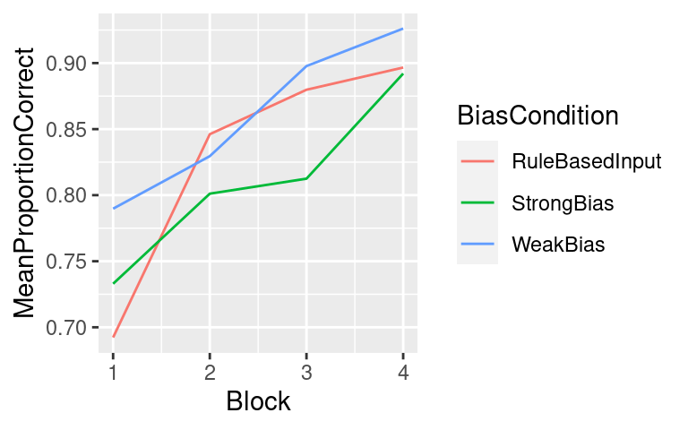
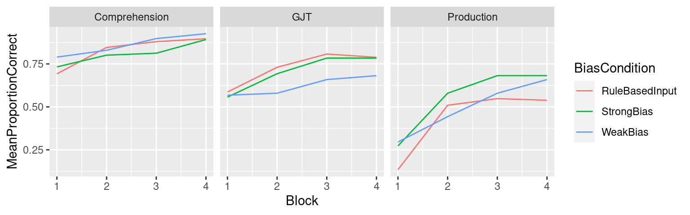
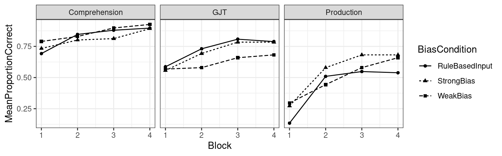
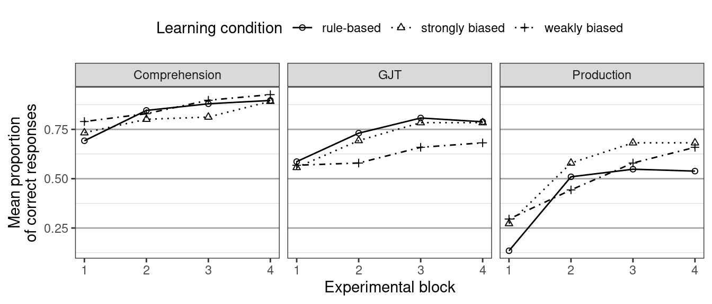

install.packages(c("ggplot2", "magrittr", "dplyr"))
# Update (2023-08-08): use 'install.packages("tidyverse")' instead.Tutorial: Drawing a line chart
R
graphs
tutorial
Graphs are incredibly useful both for understanding your own data and for communicating your insights to your audience. This is why the next few blog posts will consist of tutorials on how to draw four kinds of graphs that I find most useful: scatterplots, line charts, boxplots and some variations, and Cleveland dotplots. These tutorials are aimed primarily at the students in our MA programme. Today’s graph: the line chart.
What’s a linechart?
A line chart is quite simply a graph in which data points that belong together are connected with a line. If you want to compare different groups, as we do below, you can use lines of different colours or different types to highlight differences between the groups.
As an aside, line charts are often used to plot the development of a variable over time—the tutorial below is an example of this—and I used to think that linecharts should only be used when time was involved, that connecting data points using lines was somehow not kosher otherwise. But now I’m fine with using line charts even if time isn’t involved: the lines often highlight the patterns in the data much better than a handful of unconnected symbols do.
Tutorial: Drawing a linechart in ggplot2
In this tutorial, you’ll learn how to draw a basic linechart and how you can tweak it. You’ll also learn how to quickly partition a dataset according to several variables and compute summary statistics within each part. For this, we’ll make use of the free statistical program R and the add-on packages ggplot2, magrittr and dplyr. Working with these programs and packages may be irksome at first if you’re used to pull-down menus, but the trouble is well worth it.
Update (2023-08-08): By now, the ggplot2, magrittr and dplyr packages have been integrated into the tidyverse suite. We’ll use that instead.
What you’ll need
- The free program R.
- The graphical user interface RStudio – also free. Download and install R first and only then RStudio.
I’m going to assume some familiarity with these programs. Specifically, I’ll assume that you know how to enter commands in RStudio and import datasets stored in the CSV file format. If you need help with this, see Chapter 3 of my introduction to statistics (in German) or Google importing data R.
- The
ggplot2,magrittranddplyradd-on packages for R. To install them, simply enter the following command at the prompt in RStudio.
- A dataset. For this tutorial, we’ll use a dataset on the acquisition of morphological cues to agency that my students compiled. It consists of the responses of 70 learners (
SubjectID) who were assigned to one of three learning conditions (BiasCondition) – the details don’t matter much for our purposes. All learners completed three kinds of tasks (Task): understanding sentences in an unknown languages, judging the grammaticality of sentences in the same languages, and producing sentences in this language. These tasks occurred inBlocks. The learners’ responses were tracked throughout the experiment (ResponseCorrect). Download this dataset to your hard disk.
Preliminaries
In RStudio, read in the data.
semproj <- read.csv(file.choose())If the summary looks like this, you’re good to go.
summary(semproj) SubjectID BiasCondition Block
0krwma8qskny4r4d1za1gqsp3hp78y4s: 96 RuleBasedInput:2496 Min. :1.00
0pmm7rhegvxjttmjla7zyv0qrfwlv0a0: 96 StrongBias :2112 1st Qu.:1.75
0qyn6np5fgyrmqjfbqjq68fcvs61y2gu: 96 WeakBias :2112 Median :2.50
0uet846f755xvnm9ow9phkusz2zbhgac: 96 Mean :2.50
0vm3nrrqdd5mnbncnmon7sjp5f7fz4z8: 96 3rd Qu.:3.25
12athefgbh4zetjy4y2tn2148p713c6x: 96 Max. :4.00
(Other) :6144
ResponseCorrect Task
no :1670 Comprehension:4480
yes:5050 GJT :1120
Production :1120
Now load the packages we’ll be using. You may get a message that some ‘objects are masked’, but that’s nothing to worry about.
library(tidyverse)Summarising a data frame
We want to compare how response accuracy develops block by block in the different experimental conditions. To that end, we need to calculate the proportion of correct responses by each learner in each block and for each task. The dplyr and magrittr packages make doing so easy.
The following lines of code create a new data frame called semproj_perParticipant that was constructed by taking the dataset semproj (first line), grouping it by the variables SubjectID, BiasCondition, Block and Task (second line), and within each ‘cell’ calculating the proportion of entries in ResponseCorrect that read "yes" (third line).
semproj_perParticipant <- semproj |>
group_by(SubjectID, BiasCondition, Block, Task) |>
summarise(ProportionCorrect = mean(ResponseCorrect == "yes"),
.groups = "drop")Type the name of the new data frame at the prompt. If you see something like this, everything’s fine.
semproj_perParticipant# A tibble: 840 × 5
SubjectID BiasCondition Block Task ProportionCorrect
<fct> <fct> <int> <fct> <dbl>
1 0krwma8qskny4r4d1za1gqsp3hp78y4s StrongBias 1 Compr… 0.688
2 0krwma8qskny4r4d1za1gqsp3hp78y4s StrongBias 1 GJT 0.5
3 0krwma8qskny4r4d1za1gqsp3hp78y4s StrongBias 1 Produ… 0
4 0krwma8qskny4r4d1za1gqsp3hp78y4s StrongBias 2 Compr… 0.375
5 0krwma8qskny4r4d1za1gqsp3hp78y4s StrongBias 2 GJT 0.5
6 0krwma8qskny4r4d1za1gqsp3hp78y4s StrongBias 2 Produ… 0
7 0krwma8qskny4r4d1za1gqsp3hp78y4s StrongBias 3 Compr… 0.312
8 0krwma8qskny4r4d1za1gqsp3hp78y4s StrongBias 3 GJT 0.5
9 0krwma8qskny4r4d1za1gqsp3hp78y4s StrongBias 3 Produ… 0
10 0krwma8qskny4r4d1za1gqsp3hp78y4s StrongBias 4 Compr… 0.75
# ℹ 830 more rowsNow that we’ve computed the proportion of correct responses by each participant for each block and task, we can compute the average proportion of correct responses per block and task according to the experimental condition the participants were assigned to. The code works similarly to before: a new data frame called semproj_perCondition is created by taking the semproj_perParticipant data frame we constructed above (1), grouping it by BiasCondition, Block and Task (2) and computing the mean proportion of correct responses.
semproj_perCondition <- semproj_perParticipant |>
group_by(BiasCondition, Block, Task) |>
summarise(MeanProportionCorrect = mean(ProportionCorrect),
.groups = "drop")The result should look like this—you can see that those in the ‘rule-based input’ learning condition score an average of 69% on the first comprehension block, 59% on the first grammaticality judgement task (GJT) block, and 13% on the first production block.
semproj_perCondition# A tibble: 36 × 4
BiasCondition Block Task MeanProportionCorrect
<fct> <int> <fct> <dbl>
1 RuleBasedInput 1 Comprehension 0.692
2 RuleBasedInput 1 GJT 0.587
3 RuleBasedInput 1 Production 0.135
4 RuleBasedInput 2 Comprehension 0.846
5 RuleBasedInput 2 GJT 0.731
6 RuleBasedInput 2 Production 0.510
7 RuleBasedInput 3 Comprehension 0.880
8 RuleBasedInput 3 GJT 0.808
9 RuleBasedInput 3 Production 0.548
10 RuleBasedInput 4 Comprehension 0.897
# ℹ 26 more rowsA first attempt: Development in comprehension
To start off with a simple example, let’s plot the mean proportion of correct responses in the four comprehension blocks for the three experimental conditions and connect them with a line.
First, we create another new data frame that contains the averages for the comprehension task only. The new data frame semproj_perCondition_Comprehension is constructed by taking the data frame semproj_perCondition we constructed above and retaining (filtering) the rows for which the Task variable reads Comprehension.
semproj_perCondition_Comprehension <- semproj_perCondition |>
filter(Task == "Comprehension")
semproj_perCondition_Comprehension# A tibble: 12 × 4
BiasCondition Block Task MeanProportionCorrect
<fct> <int> <fct> <dbl>
1 RuleBasedInput 1 Comprehension 0.692
2 RuleBasedInput 2 Comprehension 0.846
3 RuleBasedInput 3 Comprehension 0.880
4 RuleBasedInput 4 Comprehension 0.897
5 StrongBias 1 Comprehension 0.733
6 StrongBias 2 Comprehension 0.801
7 StrongBias 3 Comprehension 0.812
8 StrongBias 4 Comprehension 0.892
9 WeakBias 1 Comprehension 0.790
10 WeakBias 2 Comprehension 0.830
11 WeakBias 3 Comprehension 0.898
12 WeakBias 4 Comprehension 0.926To plot these averages, use the following code. The first line specifies the data frame the graph should be based on, the second line specifies that Block (1-2-3-4) should go on the x-axis, the third that MeanProportionCorrect should go on the y-axis, and the fourth that the different experimental conditions should be rendered using different colours. The fifth line, finally, specifies that the data should be plotted as a line.
ggplot(data = semproj_perCondition_Comprehension,
aes(x = Block,
y = MeanProportionCorrect,
colour = BiasCondition)) +
geom_line()
This is decent enough for a start: it’s clear from this graph that, contrary to what we’d expected, those in the weak bias condition actually seem to perform better than the other participants, for instance. We could go on and draw similar graphs for the other two tasks—comprehension and production—but there’s a better option: draw them all at once so that the results can more easily be compared.
Several linecharts in one plot
For this plot, we use the semproj_perCondition data frame that contains the averages for all three tasks, split up by block and experimental condition. The code is otherwise the same as before, but I’ve added one additional line: facet_wrap splits up the data according to a variable (here Task) and plots a separate plot for each part. By default, the axes of the different subplots span the same range so that differences in overall performance can easily be compared between the three tasks. So not only is this quicker than drawing three separate graphs, it also saves (vertical) space and the side-by-side plots are easier to compare with one another than three separate plots would be.
ggplot(data = semproj_perCondition,
aes(x = Block,
y = MeanProportionCorrect,
colour = BiasCondition)) +
geom_line() +
facet_wrap(~ Task)
A printer-friendly version
If you prefer a printer-friendly version, you can add the theme_bw() command to the ggplot call (10th line) and specify that the different experimental conditions should be distinguished using different linetypes (solid, dashed, dotted) rather than different colours (4th line). Since the difference between dashed and dotted lines may not be immediately obvious, it can be a good idea to also plot the averages using different symbols (lines 5 and 6).
ggplot(data = semproj_perCondition,
aes(x = Block,
y = MeanProportionCorrect,
linetype = BiasCondition,
shape = BiasCondition)) +
geom_point() +
geom_line() +
facet_wrap(~ Task) +
theme_bw()
With customised legends and labels
The plot above is okay, but you can go the extra mile by customising the axis and legend labels rather than using the defaults—even if they are comprehensible, it just makes a better impression to do so:
- The
xlabandylabcommands change the names of the x- and y-axes. Note that\nstarts a new line. - With
scale_shape_manual, I changed thelabelsof the legend for the different symbols. I also changed the symbols themselves (values) as I thought the default symbols were difficult to tell apart. The values 1, 2 and 3 work fine for this graph, I think, but you can try out different values (handy list with symbol numbers). - If you customise the labels and symbols for the
shapeparameter, you need to do the same for thelinetypeparameters—otherwise, R gets confused. This is what I did inscale_linetype_manual. Note that thelabelsmust occur in the same order as the labels inscale_shape_manual. (handy list with linetypes) - In both
scale_shape_manualandscale_linetype_manual, I setnameto"Learning condition". This changes the title of the legend, and by using the same title twice, you tell R to combine the two legends into one. - In
theme,legend_positionspecifies where the legend should go (on top rather than on the right), andlegend_directionwhether the keys should be plotted next to (horizontal) or under (vertical) each other. - The lines with
panel.griddraw horizontal grid lines to facilitate the comparison between tasks and suppress any vertical grid lines ggplot may draw.
ggplot(data = semproj_perCondition,
aes(x = Block,
y = MeanProportionCorrect,
linetype = BiasCondition,
shape = BiasCondition)) +
geom_point() +
geom_line() +
xlab("Experimental block") +
ylab("Mean proportion\nof correct responses") +
facet_wrap(~ Task) +
theme_bw() +
scale_shape_manual(values = c(1, 2, 3),
labels = c("rule-based",
"strongly biased",
"weakly biased"),
name = "Learning condition") +
scale_linetype_manual(values = c("solid", "dotted", "dotdash"),
labels = c("rule-based",
"strongly biased",
"weakly biased"),
name = "Learning condition") +
theme(legend.position = "top",
legend.direction = "horizontal",
panel.grid.major.y = element_line(colour = "grey65"),
panel.grid.minor.y = element_line(colour = "grey85", linewidth = 0.2),
panel.grid.major.x = element_blank(),
panel.grid.minor.x = element_blank())
Software versions
devtools::session_info()─ Session info ───────────────────────────────────────────────────────────────
setting value
version R version 4.3.1 (2023-06-16)
os Ubuntu 22.04.2 LTS
system x86_64, linux-gnu
ui X11
language en_US
collate en_US.UTF-8
ctype en_US.UTF-8
tz Europe/Zurich
date 2023-08-08
pandoc 3.1.1 @ /usr/lib/rstudio/resources/app/bin/quarto/bin/tools/ (via rmarkdown)
─ Packages ───────────────────────────────────────────────────────────────────
package * version date (UTC) lib source
cachem 1.0.6 2021-08-19 [2] CRAN (R 4.2.0)
callr 3.7.3 2022-11-02 [1] CRAN (R 4.3.1)
cli 3.6.1 2023-03-23 [1] CRAN (R 4.3.0)
colorspace 2.1-0 2023-01-23 [1] CRAN (R 4.3.0)
crayon 1.5.2 2022-09-29 [1] CRAN (R 4.3.1)
devtools 2.4.5 2022-10-11 [1] CRAN (R 4.3.1)
digest 0.6.29 2021-12-01 [2] CRAN (R 4.2.0)
dplyr * 1.1.2 2023-04-20 [1] CRAN (R 4.3.0)
ellipsis 0.3.2 2021-04-29 [2] CRAN (R 4.2.0)
evaluate 0.15 2022-02-18 [2] CRAN (R 4.2.0)
fansi 1.0.4 2023-01-22 [1] CRAN (R 4.3.1)
farver 2.1.1 2022-07-06 [1] CRAN (R 4.3.0)
fastmap 1.1.0 2021-01-25 [2] CRAN (R 4.2.0)
forcats * 1.0.0 2023-01-29 [1] CRAN (R 4.3.0)
fs 1.5.2 2021-12-08 [2] CRAN (R 4.2.0)
generics 0.1.3 2022-07-05 [1] CRAN (R 4.3.0)
ggplot2 * 3.4.2 2023-04-03 [1] CRAN (R 4.3.0)
glue 1.6.2 2022-02-24 [2] CRAN (R 4.2.0)
gtable 0.3.3 2023-03-21 [1] CRAN (R 4.3.0)
hms 1.1.3 2023-03-21 [1] CRAN (R 4.3.0)
htmltools 0.5.5 2023-03-23 [1] CRAN (R 4.3.0)
htmlwidgets 1.6.2 2023-03-17 [1] CRAN (R 4.3.1)
httpuv 1.6.11 2023-05-11 [1] CRAN (R 4.3.1)
jsonlite 1.8.7 2023-06-29 [1] CRAN (R 4.3.1)
knitr 1.39 2022-04-26 [2] CRAN (R 4.2.0)
labeling 0.4.2 2020-10-20 [1] CRAN (R 4.3.0)
later 1.3.1 2023-05-02 [1] CRAN (R 4.3.1)
lifecycle 1.0.3 2022-10-07 [1] CRAN (R 4.3.0)
lubridate * 1.9.2 2023-02-10 [1] CRAN (R 4.3.0)
magrittr 2.0.3 2022-03-30 [1] CRAN (R 4.3.0)
memoise 2.0.1 2021-11-26 [2] CRAN (R 4.2.0)
mime 0.10 2021-02-13 [2] CRAN (R 4.0.2)
miniUI 0.1.1.1 2018-05-18 [1] CRAN (R 4.3.1)
munsell 0.5.0 2018-06-12 [1] CRAN (R 4.3.0)
pillar 1.9.0 2023-03-22 [1] CRAN (R 4.3.0)
pkgbuild 1.4.2 2023-06-26 [1] CRAN (R 4.3.1)
pkgconfig 2.0.3 2019-09-22 [2] CRAN (R 4.2.0)
pkgload 1.3.2.1 2023-07-08 [1] CRAN (R 4.3.1)
prettyunits 1.1.1 2020-01-24 [2] CRAN (R 4.2.0)
processx 3.8.2 2023-06-30 [1] CRAN (R 4.3.1)
profvis 0.3.8 2023-05-02 [1] CRAN (R 4.3.1)
promises 1.2.0.1 2021-02-11 [1] CRAN (R 4.3.1)
ps 1.7.5 2023-04-18 [1] CRAN (R 4.3.1)
purrr * 1.0.1 2023-01-10 [1] CRAN (R 4.3.0)
R6 2.5.1 2021-08-19 [2] CRAN (R 4.2.0)
Rcpp 1.0.11 2023-07-06 [1] CRAN (R 4.3.1)
readr * 2.1.4 2023-02-10 [1] CRAN (R 4.3.0)
remotes 2.4.2 2021-11-30 [2] CRAN (R 4.2.0)
rlang 1.1.1 2023-04-28 [1] CRAN (R 4.3.0)
rmarkdown 2.21 2023-03-26 [1] CRAN (R 4.3.0)
rstudioapi 0.14 2022-08-22 [1] CRAN (R 4.3.0)
scales 1.2.1 2022-08-20 [1] CRAN (R 4.3.0)
sessioninfo 1.2.2 2021-12-06 [2] CRAN (R 4.2.0)
shiny 1.7.4.1 2023-07-06 [1] CRAN (R 4.3.1)
stringi 1.7.12 2023-01-11 [1] CRAN (R 4.3.1)
stringr * 1.5.0 2022-12-02 [1] CRAN (R 4.3.0)
tibble * 3.2.1 2023-03-20 [1] CRAN (R 4.3.0)
tidyr * 1.3.0 2023-01-24 [1] CRAN (R 4.3.0)
tidyselect 1.2.0 2022-10-10 [1] CRAN (R 4.3.0)
tidyverse * 2.0.0 2023-02-22 [1] CRAN (R 4.3.1)
timechange 0.2.0 2023-01-11 [1] CRAN (R 4.3.0)
tzdb 0.4.0 2023-05-12 [1] CRAN (R 4.3.0)
urlchecker 1.0.1 2021-11-30 [1] CRAN (R 4.3.1)
usethis 2.2.2 2023-07-06 [1] CRAN (R 4.3.1)
utf8 1.2.3 2023-01-31 [1] CRAN (R 4.3.1)
vctrs 0.6.3 2023-06-14 [1] CRAN (R 4.3.0)
withr 2.5.0 2022-03-03 [2] CRAN (R 4.2.0)
xfun 0.39 2023-04-20 [1] CRAN (R 4.3.0)
xtable 1.8-4 2019-04-21 [1] CRAN (R 4.3.1)
yaml 2.3.5 2022-02-21 [2] CRAN (R 4.2.0)
[1] /home/jan/R/x86_64-pc-linux-gnu-library/4.3
[2] /usr/local/lib/R/site-library
[3] /usr/lib/R/site-library
[4] /usr/lib/R/library
──────────────────────────────────────────────────────────────────────────────